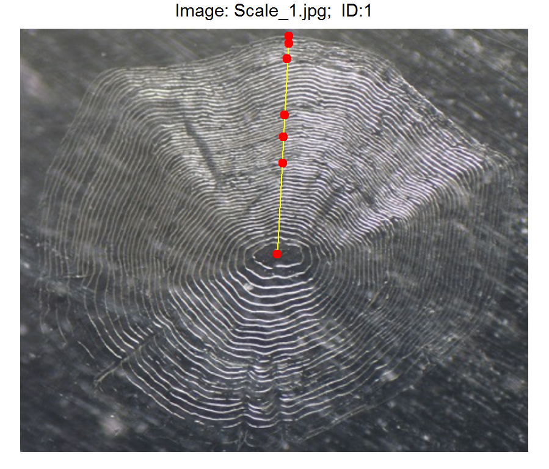

Collect radial measurements from a calcified structure by interactively selecting annuli
Derek H. Ogle
2018-04-14
Source:vignettes/MeasureRadii/collectRadiiData.Rmd
collectRadiiData.Rmd
Introduction
The size of fish at a previous time in their life is often estimated through “back-calculation.” Back-calculation of previous lengths requires accurate measurements of annual growth on calcified structures from individual fish and a suitable model that relates growth on the structure to growth of the fish.
The FishBC software is commonly used to measure lengths on a calcified structure and apply a back-calculation model to estimate length at previous ages. However, FishBC only works on out-dated computers, there are no plans to update it, and it is not open source. The functionality in the RFishBC package is meant to replace the FishBC software. Methods for making measurements on images of calcified structures is demonstrated in this document. Using those measurements to back-calculate fish length at a previous age is demonstrated in a separate vignette.
Vignette Assumptions
Understand Back-Calculation
This vignette assumes that you have a basic understanding of back-calculating fish length at previous ages. See Vigliola and Meekan (2009) and Section 11.2.3.1 in Shoup and Michaeletz (2017) for thorough introductions to this topic.
You should be aware of two foundational definitions related to measuring radii on calcified structures. First, calcified structures are scales, spines, fin rays, otoliths, or other bones from fish that can be processed in such a way as to show marks that represent annuli, or yearly benchmarks. Hereafter, “structure” will refer to “calcified structure.” Second, radii are sequential measurements from the focus (i.e., center) of the structure to the annuli, usually along a linear transect from the focus to the margin (i.e., edge) of the structure. Radii are in contrast to increments, which are the distance between successive annuli along the transect.
Static Structure Images
This vignette also assumes that you can capture a static digital image of a structure. The image must be a jpeg (.jpg), portable network graphics (.png), or bitmap (.bmp) format. Images will usually be obtained from a camera mounted on a microscope and connected to a computer. Below is a sample image of a fish scale.

Ideally, but not necessarily, the image will also contain an object (e.g., a “scale-bar”) of known length so that actual lengths on the structure can be found. If a scale-bar is absent, then the measured lengths will be on an arbitrary scale (i.e., the actual values will be meaningless but the proportion of the total structure radius to each annulus will be meaningful). Below is a sample image of a Kiyi otolith with a 1-mm scale-bar.

The process described herein requires that all images to be processed be stored in the same directory or folder. To be most efficient (and simple), this directory should contain ONLY image files related to a particular project (e.g., one species for one water body for one year) and all image files should be of the same type (e.g., png or jpg).
Generally, the user will “set” the current working directory in R to the directory where these images are stored with setwd(). If using RStudio, the working directory can be set with any of the options under the Session … Set Working Directory menu.1 The following is an example of setting a working directory in R.
setwd("c:/work/aging/Kiyi2014")Finally, note that the process described herein will produce one R data object files (.RData files; hereafter called “RData file”) for each set of measurements made on a structure images. These data files will be saved in the same directory that has the structure image files. I suggest keeping the RData and corresponding structure image files together at all times as the RData file serves as an archive of the data collected from each image.
Collect Radii Data from the Structure Image
The digitizeRadii() function is used to
- Load an image of a structure.
- Optionally provide a scaling for the image.
- Interactively select annuli on the structure image.
- Create an RData file that contains the radial measurements to selected annuli and other information about the structure and the data extraction process.
For example (but described thoroughly further below), the line below identifies “Scale_1.jpg” as the structure image, this fish has an identification number of “1”, this reading of the image should be labelled as “DHO”, and edge should be considered as annulus. When this line is run it will open the image2, allow the user to select points that represent annuli, and save radial measurements in “Scale_1_DHO.Rdata”.3
digitizeRadii("Scale_1.jpg",ID="1",reading="DHO",edgeIsAnnulus=FALSE)Further specifics of digitizeRadii() and its many arguments are described below.
The Basics
The first several arguments to digitizeRadii() are related to information about the structure.
-
fname=: File name for the structure image. This is just a file name if the file is in the current working directory, however may be the fully pathed name if the image file is not in the current working directory. If this argument is not given, then a dialog box will be provided from which the file can be selected. -
ID=: Required unique identifier for the fish/structure. -
reading=: Optional label for the reading.4 -
suffix=: Optional additional label for the resultant RData file. -
description=: Optional detailed description about the structure. This will be saved in the RData file and shown in various plots and tables. For example, one may usedescription="Cisco scale read once by Ogle on 22-Apr-18"to provide more information about the structure reading.
The RData file that will be created after the annuli have been selected will have the same name as the image file5 but including the suffix optionally provided in suffix=. If nothing is given in suffix=, then a suffix will be created from reading=. For example, if the structure image file was named “Scale_1.jpg”, then the resultant RData file will be named “Scale_1_DHO.Rdata” if reading="DHO" or “Scale_1_TESTING.Rdata” if reading="DHO" and suffix="TESTING".
Some fish will be captured at a time of year when growth for the current season has not commenced and, thus, the margin of the structure is considered to be an annulus. Other fish may be captured when growth has commence for the season (but not yet completed) such that the structure margin is not considered to be an annulus. If the scale margin is considered an annulus, then use edgeIsAnnulus=TRUE. If the scale margin is not considered an annulus, then use edgeIsAnnulus=FALSE. Identifying whether the structure margin is an annulus or not is critical to properly recording radial measurements. As such, there is no default value for this argument (i.e., it MUST be set by the user).
Setting the Scale on the Image
If actual lengths, rather than arbitrary (but proportional) lengths are needed,6 then a scaling factor must exist to convert measurements on the image to actual measurements on the structure. This scaling factor may be calculated from a scale-bar found on the image or provided by the user.
Scale-bar On Image: If a scale-bar of known length exists on the image, then use scaleBar=TRUE with the actual length of the scale bar given in scaleBarLength=. You will then need to select the two end points of the scale-bar on the structure image prior to selecting points that represent annuli. An appropriate scaling factor will then be computed from your selections and the radial measurements will be converted to the actual scale (see further below).
Separately Define Scaling Factor: In applications where a scale-bar does not exist on the image, the user can provide a value to scalingFactor= which will be used to multiply lengths on the structure image to derived actual lengths. One way to derive this scaling factor values is to capture an image of the structure at a specific magnification on the microscope and then capture an image of an object of known length at that same magnification. A scaling factor may then be computed from the image with the object of known length and applied to the structure image. This scaling factor can be found by giving findScalingFactor() the file name with the object of known length and that known length in knownLength=. The value returned from findScalingFactor() can then be given to scalingFactor= in digitizeRadii().7
If no scalingFactor= is given or derived from a scale-bar, then the radial measurements returned by digitizeRadii() are simply proportional to the unknown actual lengths on the structure.
Selecting Annuli on the Image
The user will then be asked to select points on the structure image that represent annuli. However, the point that represents the focus must be selected first, followed by the structure margin/edge.8 If addTransect=TRUE (the default behavior), then a line will be drawn between these two points to aid marking the annuli. When the last point has been selected, the user must press the ESCape key in Windows or with Mac OS X (or, in Windows, select STOP in the menu on the structure image window).
Other Arguments for digitizeRadii() & Setting them for a Session
The digitizeRadii() function has several optional arguments not discussed above. Some arguments that are likely to be commonly used are:
- By default, each image file is opened in a separate window, which helps avoid issues with the RStudio Plots pane and is especially useful when working on a system with two monitors.9 This window is also configured so that when it is resized, the shape of the structure image (i.e., its aspect ratio) will not change. One can suppress showing the structure image in a separate window with
sepWindow=FALSE. - The color and width of the transect shown on the image can be modified with
col.transect=andlwd.transect=, respectively. - The plotting character, color, and relative size of the selected points can be modified with
pch.sel=,col.sel=, andcex.sel=, respectively.
These and other arguments have default settings that are stored in an object that can be accessed with RFBCoptions(). Using this function without any arguments will show all of the arguments that can be set and what their default values are (not shown here because the list is long). The current value for one argument can be seen by appending the name of that argument to RFBCoptions() separated by a $. For example, the current setting for addTransect is TRUE as shown below.
RFBCoptions()$addTransect
#> [1] TRUEThese “default” values for arguments can be changed so that they do not need to be included each time you call digitizeRadii(). For example, suppose that you want the “reading” label to say “DHO”, the edge to not be considered an annulus, the width of the transect line to be thicker, and a scale-bar is present with a known length of 0.6 mm. You can set these items in digitizeRadii() as below.
digitizeRadii("Scale_1.jpg",ID="1",reading="DHO",edgeIsAnnulus=FALSE,
lwd.transect=3,scaleBar=TRUE,scaleBarLength=0.6)However, if you want to use these settings for all images in a session then it is a hassle to set them every time you call digitizeRadii(). The default values for these arguments can be set for the entire session (i.e., until you change them or close R and open it again) by including the argument name set equal to the desired default value within RFBCoptions(). For example, if the code below is run at the beginning of a session (i.e., early in the script), then every call to digitizeRadii() after that will default to using “DHO” as the reading label, not treating the edge as an annulus, using a thicker line for the transect, and identifying that a scale-bar with a known length of 0.6 exists on the image.
RFBC(reading="DHO",edgeIsAnnulus=FALSE,edgeIsAnnulus=FALSE,
lwd.transect=3,scaleBar=TRUE,scaleBarLength=0.6)With this, the last call to digitizeRadii() above could be simplified as shown below.
digitizeRadii("Scale_1.jpg",ID="1")Argument values can still be changed from these for a particular call to digitizeRadii() by including that argument in the specific call. For example if the edge was an annulus for only one of the structures then include edgeIsAnnulus=TRUE in digitizeRadii().
Examine Radii Data
Data.frame of Radii Measurements
The result from digitizeRadii() (see Section 2) is an RData file in the current working directory. Among other things, this data file contains a data.frame of radial measurements to successive annuli that can be extracted with combineData().
df <- combineData("Scale_1_DHO.RData")df
#> ID reading ageCap ann rad radCap
#> 1 1 DHO 5 1 0.2141602 0.5143776
#> 2 1 DHO 5 2 0.2767637 0.5143776
#> 3 1 DHO 5 3 0.3289998 0.5143776
#> 4 1 DHO 5 4 0.4621417 0.5143776
#> 5 1 DHO 5 5 0.4974369 0.5143776
#> 6 1 DHO 5 6 0.5143776 0.5143776The combineData() function is more interesting when considering multiple structures (see Section 6).
Visualize Annular Markings
One can review the markings on a structure with showDigitizedImage(), which requires only the name of an RData file.10 The plotting character, color, and relative size of the selected points may be changed with pch.show=, col.show=, and cex.show=. The color and width of the “transect” may be changed with col.transect= and lwd.transect= or excluded altogether with showTransect=FALSE. Defaults for these arguments can be set with RFBCoptions() as was demonstrated in Section 3.4
showDigitizedImage("Scale_1_DHO.RData")
Examine Multiple Reads of the Same Structure
In some instances, one may be interested in visually comparing the selected points from multiple readings of the same structure. For example, the code below was used to collect a second set of points for the “Scale_1.jpg” image.11 Note the different value in reading=.
digitizeRadii("Scale_1.jpg",ID="1",reading="DHO2",edgeIsAnnulus=FALSE)The showDigitizedImage() function described above can also used to overlay annular points from multiple readings of the same structure. This requires a vector of RData file names from the same structure as the first argument. The listFiles() function may be used to identify all filenames in the current working directory that have a the file extension given in the first argument. For example, all files with the “RData” extension are found below.
listFiles("RData")
#> [1] "Scale_1_DHO.RData" "Scale_1_DHO2.RData" "Scale_2_DHO.RData"This list of names can be further filtered by including other key words for the filenames in other=. For example, all files with the “RData” extension that contain the keyword “Scale_1” are returned. For our purposes here, these filenames are saved into an object (e.g., fns).
( fns <- listFiles("RData",other="Scale_1") )
#> [1] "Scale_1_DHO.RData" "Scale_1_DHO2.RData"The multiple readings of “Scale_1” can be seen by giving this set of filenames to showDigitizedImage().
showDigitizedImage(fns)
Aspects of the transects and points may be controlled with arguments to showDigitezedData(). For example, the code below uses different colors for two transects and points and a thicker line for each transect.
showDigitizedImage(fns,col.transect=c("red","yellow"),
col.show=c("yellow","red"),lwd.transect=2)
Combine Data from Multiple Structures
File Organization
Of course, most analyses will consist of collecting radial measurements from structures from many fish. In this section, I demonstrate how to combine measurements from multiple structures. This demonstration assumes that all structure image files of interest are in the current working directory.12
The listFiles() function (described in the previous section) is used to identify file names with the “jpg” extension.
listFiles("jpg")
#> [1] "Oto140306.jpg" "Scale_1.jpg" "Scale_2.jpg"In this case, however, this list needs to limited to only those files that contain the keyword “Scale”.
( fns <- listFiles("jpg",other="Scale") )
#> [1] "Scale_1.jpg" "Scale_2.jpg"Processing Multiple Structure Images
The user would then process each structure in the working directory as described in Section 1. This will require multiple calls to digitizeRadii(), each with a different structure image file name. If the file names are stored in an object as show above, then these names can be extracted by their position in the object. For example, fns[1] identifies the first filename in fns (i.e., “Scale_1.jpg”). The ID= argument should change to represent the unique identification number of each fish. Finally, RFBCoptions() can be used to change default values for some arguments as described in Section 3.4 and shown below for the reading= and edgeIsAnnlus= arguments.
RFBCoptions(reading="DHO",edgeIsAnnulus=FALSE)
digitizeRadii(fns[1],ID="1")
digitizeRadii(fns[2],ID="2")Combining Data Extracted from Multiple Structure Images
Once all structure image files have been processed, the radial measurements can be combined into one data.frame with combineData(). The first argument to this function is a vector of RData file names, which can be constructed using listFiles() with the .RData extension.
listFiles("RData")
#> [1] "Scale_1_DHO.RData" "Scale_1_DHO2.RData" "Scale_2_DHO.RData"However, I don’t want the “DHO2” file in this case. Thus I restricted the list of files to those that have “DHO.” in the name, but because the “.” is a special character it had to be preceded by “\”.
( fns2 <- listFiles("RData",other="DHO\\.") )
#> [1] "Scale_1_DHO.RData" "Scale_2_DHO.RData"Finally, the data in these two files are combined and stored in dfrad.
( dfrad <- combineData(fns2) )
#> ID reading ageCap ann rad radCap
#> 1 1 DHO 5 1 0.2141602 0.5143776
#> 2 1 DHO 5 2 0.2767637 0.5143776
#> 3 1 DHO 5 3 0.3289998 0.5143776
#> 4 1 DHO 5 4 0.4621417 0.5143776
#> 5 1 DHO 5 5 0.4974369 0.5143776
#> 6 1 DHO 5 6 0.5143776 0.5143776
#> 7 2 DHO 4 1 0.1665271 0.4385261
#> 8 2 DHO 4 2 0.2341519 0.4385261
#> 9 2 DHO 4 3 0.3220884 0.4385261
#> 10 2 DHO 4 4 0.3888447 0.4385261
#> 11 2 DHO 4 5 0.4385261 0.4385261Preparing for Back-Calculations
Other information about the fish (e.g., location of capture, length, sex) is likely held in a separate file. Below, example “other” data are loaded into the dffish data.frame. Note that the ID and reading variables created from processing the structure images above are characters. In this case, read.csv() reads the ID variable from the external data file as numeric (because the unique IDs were simple numbers). The second line of code below converts these numeric IDs to characters so that this data.frame can be joined with the radial measurements data.frame from above.13
dffish <- read.csv("FishData.csv",stringsAsFactors=FALSE) %>%
mutate(ID=as.character(ID)) %>%
inner_join(dfrad,by="ID")
dffish
#> ID loc sex len reading ageCap ann rad radCap
#> 1 1 MI-5 M 189 DHO 5 1 0.2141602 0.5143776
#> 2 1 MI-5 M 189 DHO 5 2 0.2767637 0.5143776
#> 3 1 MI-5 M 189 DHO 5 3 0.3289998 0.5143776
#> 4 1 MI-5 M 189 DHO 5 4 0.4621417 0.5143776
#> 5 1 MI-5 M 189 DHO 5 5 0.4974369 0.5143776
#> 6 1 MI-5 M 189 DHO 5 6 0.5143776 0.5143776
#> 7 2 MI-6 F 210 DHO 4 1 0.1665271 0.4385261
#> 8 2 MI-6 F 210 DHO 4 2 0.2341519 0.4385261
#> 9 2 MI-6 F 210 DHO 4 3 0.3220884 0.4385261
#> 10 2 MI-6 F 210 DHO 4 4 0.3888447 0.4385261
#> 11 2 MI-6 F 210 DHO 4 5 0.4385261 0.4385261Some people prefer that the data be presented in “one-fish-per-line” rather than “one-measurement-per-line” (as in dffish) format. The one-measurement-per-line data.frame can be converted to one-fish-per-line by including it as the first argument to spread(). In addition, the variable name that identifies the annuli number must be included in key= and variable name that identifies the radial measurements must be included in value=. The sep= argument is used here as well so that the column names in the resultant data.frame are not simply numbers. In this case, the new variable names will be a combination of the variable name in key=, the string in sep=, and the numbers in the value= variable.
dffish2 <- spread(dffish,key=ann,value=rad,sep="rad")
dffish2
#> ID loc sex len reading ageCap radCap annrad1 annrad2 annrad3
#> 1 1 MI-5 M 189 DHO 5 0.5143776 0.2141602 0.2767637 0.3289998
#> 2 2 MI-6 F 210 DHO 4 0.4385261 0.1665271 0.2341519 0.3220884
#> annrad4 annrad5 annrad6
#> 1 0.4621417 0.4974369 0.5143776
#> 2 0.3888447 0.4385261 NAEither file can be written to a “comma-separated values” (CSV) file with write.csv() using the R object name (e.g., dffish or dffish2 as the first argument and a name for the file in file=. Additionally, I prefer to have non-quoted values by using quote=FALSE and no row names by using row.names=FALSE. For example, the “one-measurement-per-line” data can be output to “Kiyi2014_BCs.csv” as follows.
write.csv(dffish,file="Kiyi2014_BCs.csv",quote=FALSE,row.names=FALSE)CSV files are small, portable, and can be opened directly in most spreadsheet softwares.
References
Shoup, D.E., and P.H. Michaletz. 2017. Growth estimation: Summarization. Pages 233-264 in Quist, M.C. and D.A. Isermann, editors. Age and growth of fishes: principles and techniques. American Fisheries Society, Bethesda, MD.
Vigliola, L., and M.G. Meekan. 2009. The back-calculation of fish growth from otoliths. Pages 174-211 in Green, B., B. Mapstone, G. Carlos, and G. Begg, editors. Tropical fish otoliths: information for assessment, management and ecology, volume 11. Springer, Dordrecht, Netherlands.
My preference is to start a script that will contain all of the code described later in this vignette. If this script is saved to the same directory with the structure images then the working directory can be set in RStudio with the Session … Set Working Directory … to Source File Location menu items. I then copy the resultant
setwd()code to my script so that I do not have to use the menu items when I run this script again.↩This assumes that the
Scale_1.jpgfile is in the current working directory. You can see what the current working directory is withgetwd().↩Actually much more than the radial measurements are recorded in the RData file (discussed further below). Also note that the radii are on an arbitrary scale in this case because no scale-bar was available on the image.↩
The
readingsitem is primarily used when the structure is read more than once. However, it is a required component in this package, whether multiple reads of the same structure are planned or not.↩The extension (e.g., “png” or “jpg”) will not be included in the resultant R data object file.↩
Some back-calculation methods require knowing the relationship between actual scale length and fish length. See this vignette for more details.↩
Thus,
findScalingFactor()would be run prior todigitizeRadii().↩When the structure image is in the “Plots” pane of RStudio, the points will not be visible until after you have finished selecting all points.↩
For example, you could have R/RStudio on one monitor and the window with the structure image on the other.↩
If no file name is given, then a dialog box will appear from which the data file can be selected.↩
The first set of readings were made in the first section above.↩
This process will be more efficient if not other image files of the same sort (e.g., “.jpg”) are in this directory. The working directory may be seen with
getwd()and set withsetwd()or any of the items under the “Session” menu and “Set Working Directory” submenu items in RStudio.↩The two files cannot be joined by the “ID” variable if the “ID” variables are of different types (e.g., character and numeric) in the two files. Thus, as shown here, they must be coerced to be the same type. This line of code would no be needed if the “ID” variables were of the same type in the two files as would likely occur if the “ID” variable was not simply numbers.↩